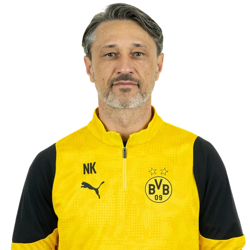
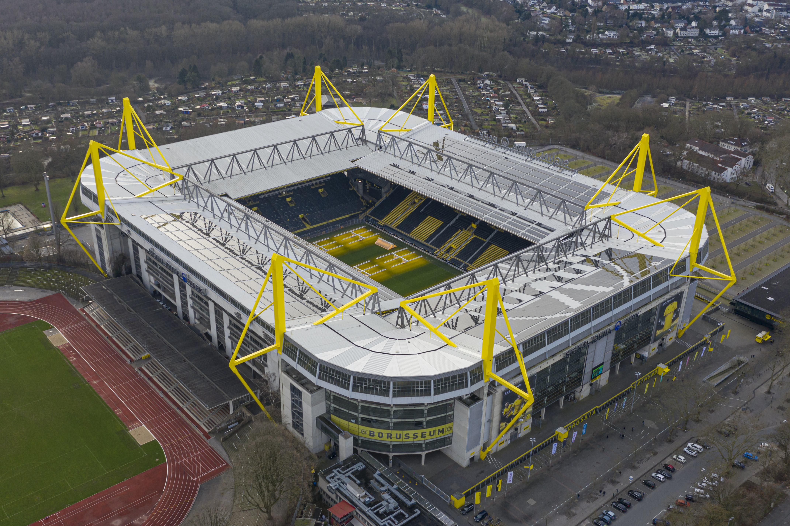

Treinador: Niko Kovac
Niko Kovač é o treinador do Borussia Dortmund, cargo que assumiu em fevereiro de 2025. O técnico croata destaca-se pelo seu rigor tático e exigência física, tendo como missão reestruturar o rumo desportivo e devolver a estabilidade ao clube alemão.

Estádio: Signal Iduna Park
O Signal Iduna Park é o lendário estádio oficial do Borussia Dortmund. Inaugurado originalmente em 1974 com o nome de Westfalenstadion, o recinto é amplamente considerado um dos templos sagrados do futebol mundial, famoso pela sua atmosfera avassaladora e pela paixão incomparável dos seus adeptos.

Estilo de Jogo:
O estilo de jogo que Niko Kovač implementou no Borussia Dortmund baseia-se em extrema intensidade física, solidez defensiva pragmática e transições ofensivas rápidas.
"Echte Liebe!"